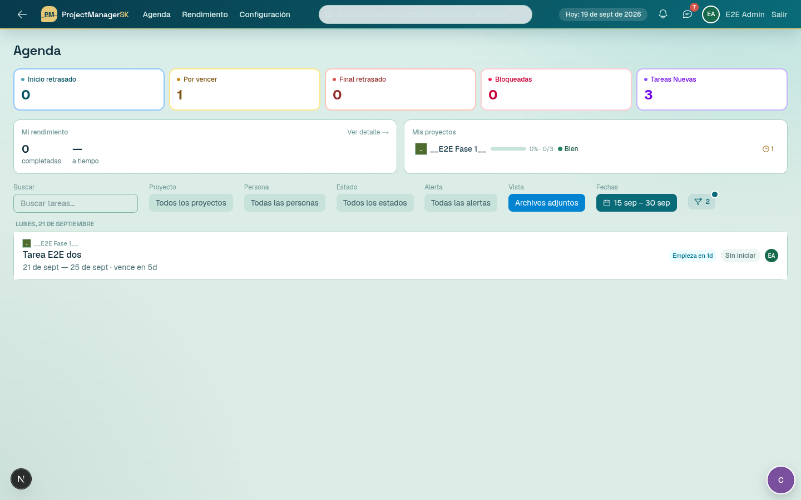
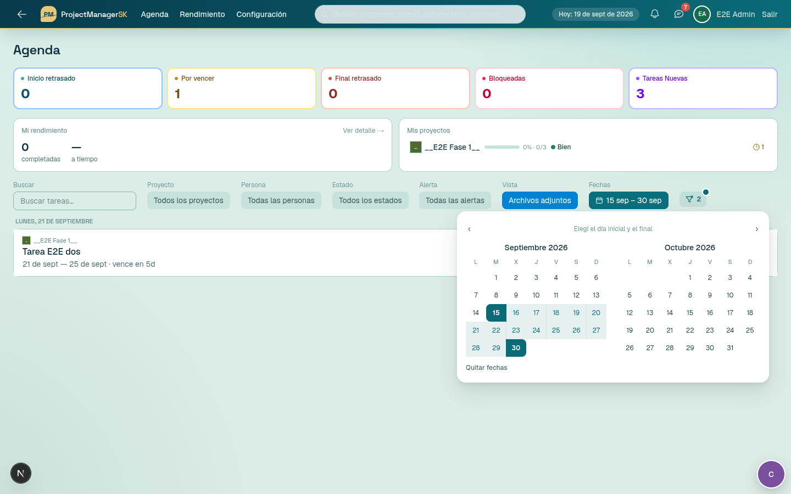
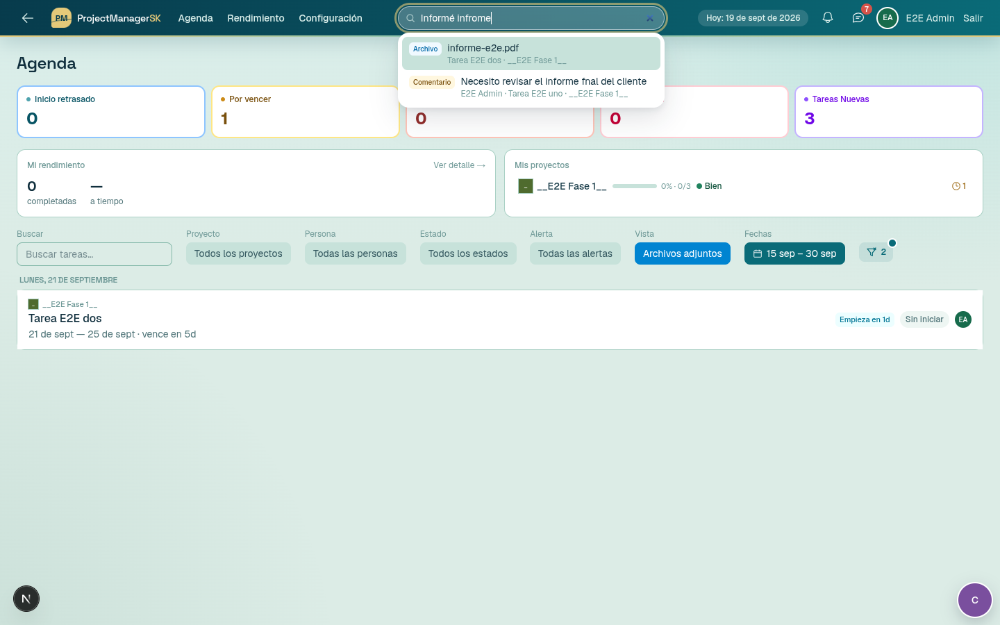
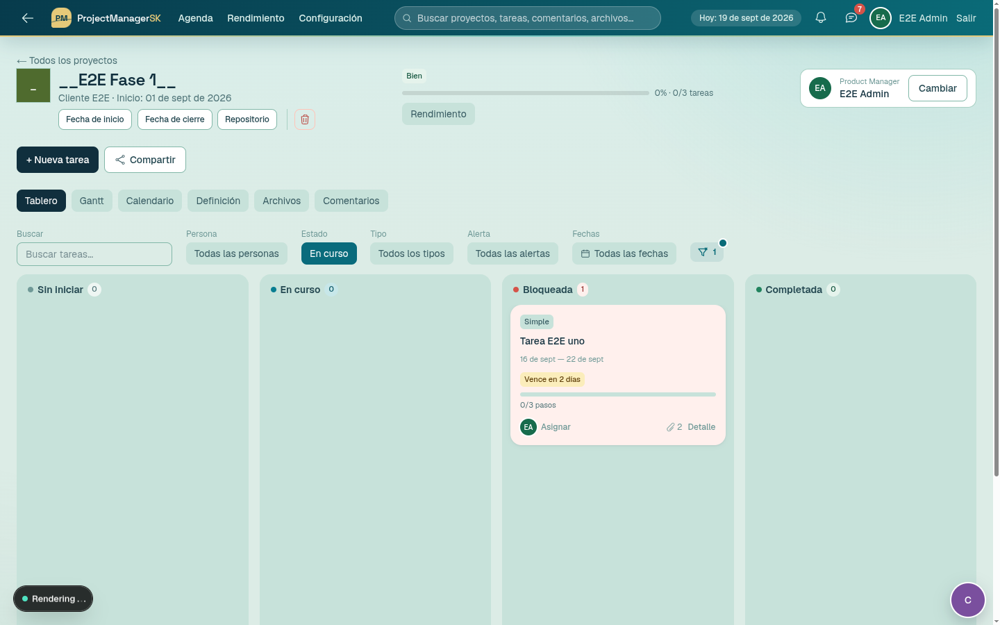
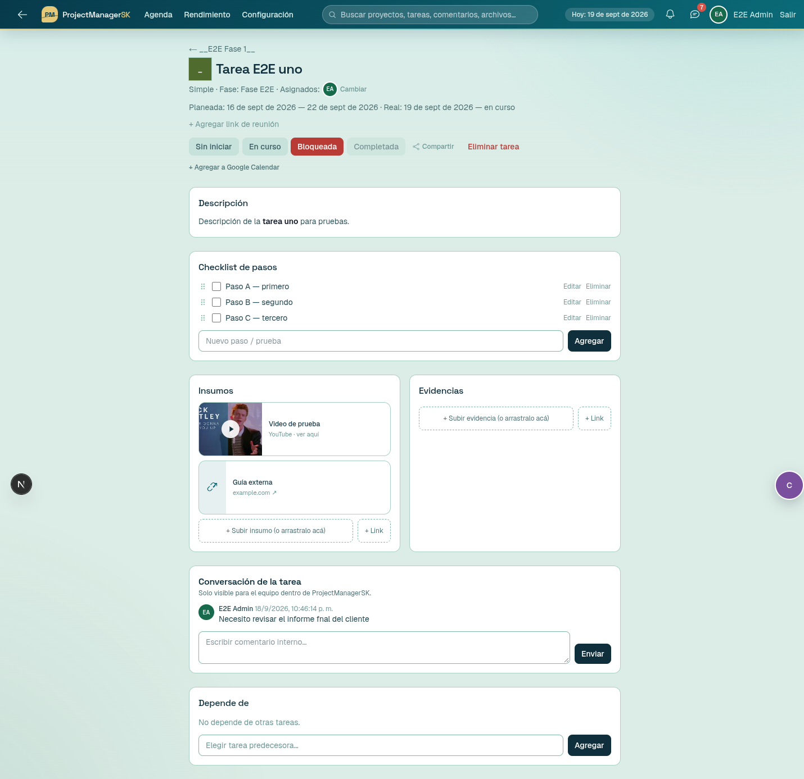
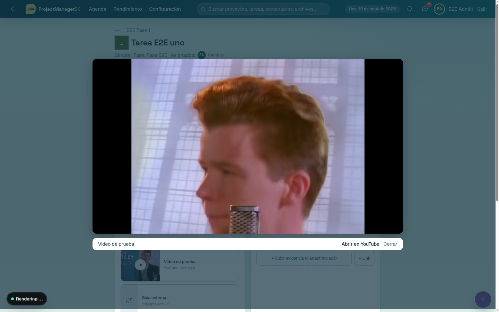
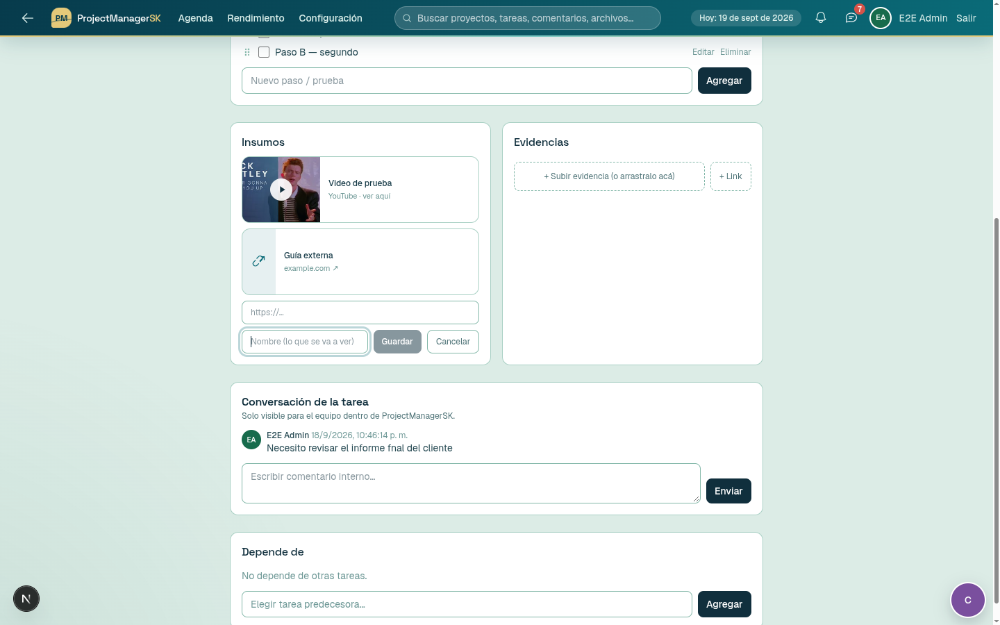
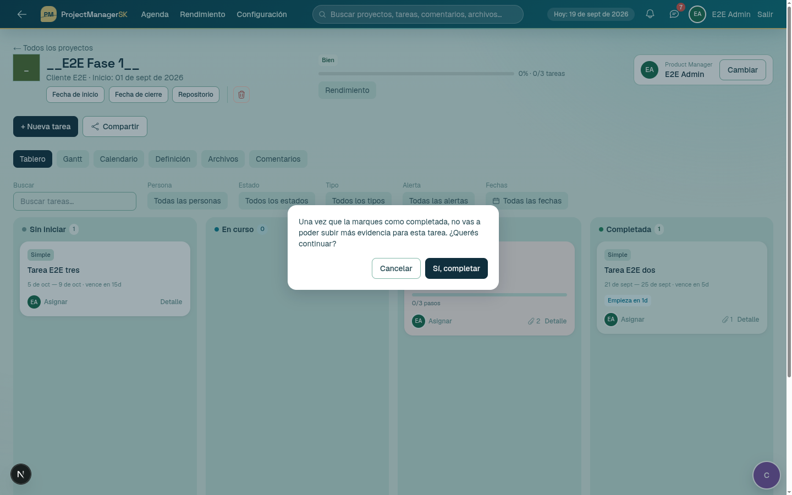
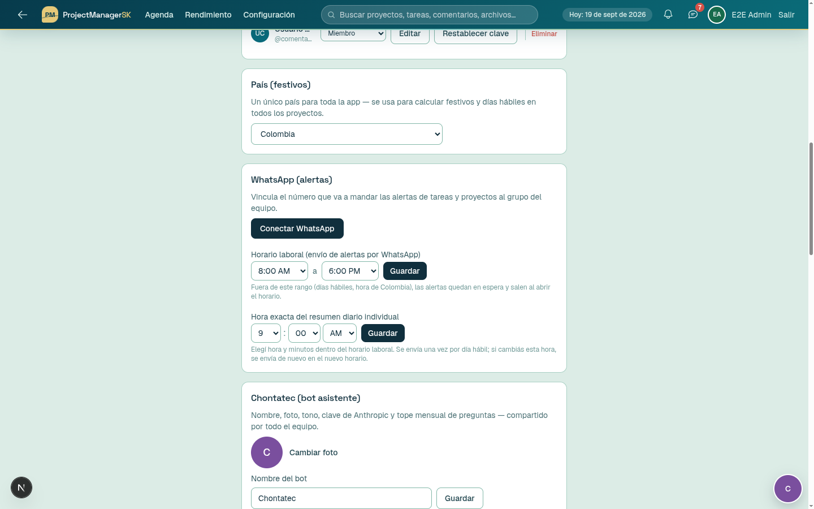
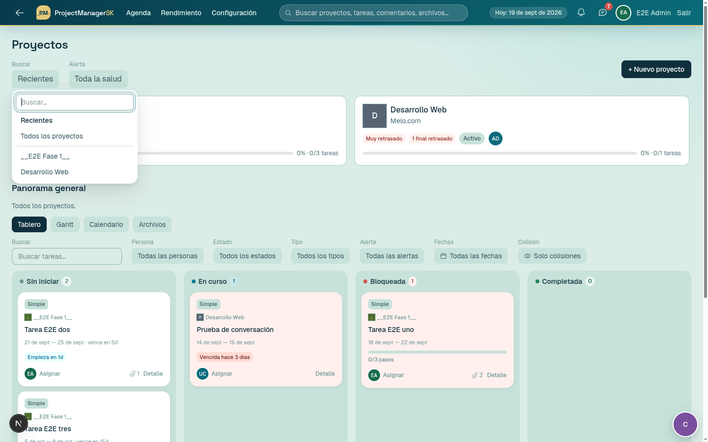

Informe — Fase 1 (bajo riesgo)
ProjectManagerSK · trabajo en modo /solo-ya · 18 de septiembre de 2026 · fuente: docs/instrucciones_de_desarrollo_sistema_pmsk.md
1. Estado por ítem
| Ítem del documento | Estado | Qué se hizo / alcance real |
|---|---|---|
| Click abre la tarea, click sostenido arrastra | Hecho | El tablero solo empieza a arrastrar tras mover 6 px; un click limpio abre la tarea (antes era doble click). Los controles internos (Detalle, eliminar, asignar) siguen funcionando aparte. |
| Completar en tablero: mover ya y confirmar después | Hecho | La card salta a «Completada» de inmediato y abre la confirmación; si cancelas vuelve a su columna; si confirma, se guarda en el servidor (y si el servidor rechaza, vuelve y avisa). |
| Descripción arriba del checklist, con el estilo de las demás secciones | Hecho | Sección propia «Descripción» (misma tarjeta que Checklist/Insumos). Se oculta si no hay descripción y quien mira no puede editar. |
| Reordenar checklist con arrastre | Hecho | Asa de arrastre por paso; orden inmediato, se guarda en servidor (reorderSteps, con permiso y validación) y sobrevive a recargar. Si falla, vuelve al orden anterior. |
| Links más vistosos | Hecho | Tarjeta de link con dominio visible; los de YouTube muestran miniatura con botón de play. |
| Visor integrado de YouTube | Parcial | Funciona en Insumos, Evidencias y la vista Archivos (youtube-nocookie, sin salir de la app). No se aplicó a las listas de links de Definición del proyecto ni a los paneles de Revisión/Aceptación/Ajustes. |
| Subir link: primero URL, luego Nombre | Hecho | Cambiado en todos los formularios de link (insumos, definición, revisión, aceptación, ajustes). |
| Filtrados no desaparecen al cambiar de estado | Parcial | En el Tablero (proyecto y panorama general) la card movida se queda visible aunque deje de coincidir, hasta que cambies los filtros. No aplica al Gantt/Calendario/Agenda porque ahí no se cambia el estado. Si cambias el estado dentro del detalle y vuelves, el filtro sí la oculta. |
| Botón de reseteo de filtros (solo con filtros activos, con indicador) | Hecho | Icono compacto con tooltip, punto y contador. Agregado en Agenda, Proyecto (tablero/Gantt/calendario), Panorama general, Resumen de proyectos, Archivos (proyecto y general) y Rendimiento. |
| Filtro de rango de fechas tipo hotel | Parcial | Calendario de dos meses, primer click inicio / segundo click fin. En Tablero, Gantt, Calendario, Agenda y Panorama. No está en las vistas de Archivos ni en Rendimiento. |
| «Archivos adjuntos» en el filtro «Vista» | Parcial | Agregado en Agenda, que es el único lugar donde existe el filtro «Vista». Los links pegados no cuentan como archivo. |
| Buscador rápido en el header (tolerante a errores) | Hecho | Desplegable en vivo bajo el campo (sin modal). Busca proyectos, tareas, pasos del checklist, comentarios, archivos y links. Ignora tildes/mayúsculas, tolera erratas y transposiciones y no exige el orden de las palabras. Respeta permisos. |
| Clic en el icono de un proyecto → vista principal | Hecho | Encabezado del proyecto, detalle de tarea, cards del tablero, encabezados de fase del Gantt, Rendimiento, Definición y Colisiones. Donde el icono ya vive dentro de otro link (tarjetas del resumen, lista de Agenda) no se anidó otro para no romper el HTML. |
| Resumen fuera del listado (lógica de «Recientes») | Interpretado | «Todos los proyectos» ahora es una opción fija, separada de la lista de proyectos individuales, igual que «Recientes». Ver duda 3. |
| Corrector ortográfico en todos los campos | Hecho | Se activa el corrector nativo del navegador en inputs de texto, textareas y el editor enriquecido (no en email/URL/contraseña/número). Depende del diccionario en español del navegador. |
| Horario laboral en 12 h AM/PM | Hecho | Horario laboral y hora del resumen diario pasan a selectores con AM/PM. Los valores guardados siguen siendo 24 h (no hay migración). |
| Barra de 10 bloques en el resumen diario | Hecho | Cada 🟩/🟨/🟥 = 10 % (verde ≥70, amarillo ≥40, rojo el resto; ⬜ vacío). Verificado por script; no se envió ningún WhatsApp. |
| Imágenes de perfil que desaparecen | Solo diagnóstico | El mecanismo de almacenamiento persistente ya existía (PERSISTENT_UPLOADS_DIR). Lo único añadido: un aviso en el log de producción si esa variable falta. Ver duda 1. |
2. Evidencia (Chrome sobre la app real)
Las pruebas usaron un usuario y un proyecto temporales (__e2e_admin__ / __E2E Fase 1__) que se borraron al terminar; no se tocaron datos reales.







https://… → Nombre).


Otras verificaciones (sin captura)
- Click simple en una card del tablero abre la tarea (URL cambió a
/tasks/…). - Reordenar checklist: orden C-A-B se conservó tras recargar la página.
- Click en el icono del proyecto desde el detalle de tarea →
/projects/<id>. npm run verify:search-filters(nuevo, sin base de datos): 21 aserciones sobre búsqueda difusa, cruce de rango de fechas y barra de progreso — todas pasan.tsc --noEmitsin errores; consola del navegador sin errores ni advertencias.
3. Lo que NO se hizo o quedó a medias
- Avatares: no se cambió el almacenamiento (ver duda 1).
- No se corrió
next build(había unnext devactivo en el puerto 3000 y un build habría pisado su carpeta.next). Sí pasaron TypeScript y ESLint de lo tocado. - Sin probar en Chrome: el filtro de fechas dentro del Gantt y del Calendario (la lógica sí está cubierta por el script), la vista con un usuario no-admin, y el envío real del resumen por WhatsApp (por regla de tu memoria no se manda nada de prueba al grupo).
- Lint: quedan 1 error y 1 advertencia previos (
GanttView.tsx:270,agenda/page.tsxagendaHrefsin usar); no los toqué por estar fuera de alcance. - Nada commiteado: todo está en el working tree (y estos archivos nuevos como sin seguimiento).
4. Supuestos que tomé
- «Click sostenido» = arrastre tras mover 6 px (estándar en tableros). No exige mantener presionado un tiempo.
- El rango de fechas filtra por cruce de plazos: una tarea entra si su inicio–fin planeado se solapa con el rango (no solo si empieza o termina dentro).
- «Archivos adjuntos» = tareas con al menos un archivo subido; los links pegados no cuentan.
- Buscador: «comentarios» = la conversación interna de tareas/proyectos; cada quien ve solo lo de sus proyectos (admin todo; el resto, proyectos que administra o donde es asignado/revisor). Las coincidencias exigen ≥ 60 % de las palabras buscadas. Tope: se revisan los 2 000 comentarios más recientes.
- Colores de la barra: umbrales 40 % / 70 % elegidos por mí.
5. Dudas abiertas
1. Avatares. El código ya guarda todo en public/uploads y lo convierte en un enlace a PERSISTENT_UPLOADS_DIR. Si esa variable no está definida en Hostinger, cada deploy borra los avatares — y no puedo verificarlo desde aquí. ¿Está definida en producción? Si lo está y aun así desaparecen, hace falta investigar en el servidor; si prefieres una solución independiente del disco, la alternativa es guardar la imagen del avatar en la base de datos (implica ampliar una columna: una migración pequeña).
2. «Click sostenido». ¿Te sirve arrastrar tras mover 6 px o quieres realmente mantener presionado ~0,2 s antes de poder arrastrar (más lento, pero evita arrastres accidentales en táctil)?
3. «Recientes» / resumen. Interpreté el punto como dejar «Todos los proyectos» como opción fija fuera de la lista de proyectos. Si te referías a otra cosa (por ejemplo, un botón «Resumen» aparte del selector), dímelo.
4. Filtro «Vista». Solo existe en Agenda. ¿Quieres que «Archivos adjuntos» (y «Nuevas») también estén como filtro en el proyecto y el panorama general?
5. Persistencia del filtro. Hoy una card movida se queda visible solo mientras estás en esa pantalla. Si cambias el estado desde el detalle de la tarea y vuelves atrás, el filtro la oculta. ¿Quieres que también se recuerde entre pantallas (guardándolo en el navegador)?
6. Fechas y archivos. ¿Debe haber filtro de fechas también en las vistas de Archivos y en Rendimiento (por fecha de subida / de entrega)? No lo añadí porque «todas las vistas» del documento suena a vistas de tareas.
7. Buscador. Hoy no indexa comentarios de enlaces compartidos ni mensajes dentro de rondas de revisión, ni el contenido de los archivos (solo su nombre). ¿Los incluimos?
6. Archivos principales tocados
Nuevos: HeaderSearch.tsx, api/search/route.ts, lib/fuzzy.ts, lib/dateRange.ts, lib/progressBar.ts, DateRangeFilter.tsx, ResetFiltersButton.tsx, YouTubeModal.tsx, StepList.tsx, scripts/verify-search-filters.ts. Modificados (entre otros): KanbanBoard.tsx, projects/[id]/page.tsx, projects/page.tsx, agenda/page.tsx, detalle de tarea (page.tsx, actions.ts, AttachmentPreview/Grid/Uploader), WhatsAppConnectPanel.tsx, notifications.ts, ComboFilter.tsx, ProjectIcon.tsx, layout.tsx (raíz y de la app).